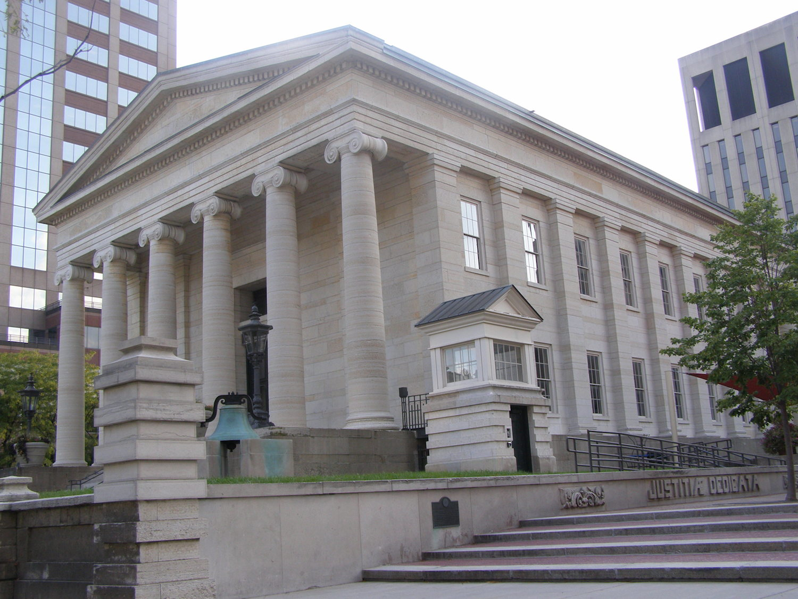
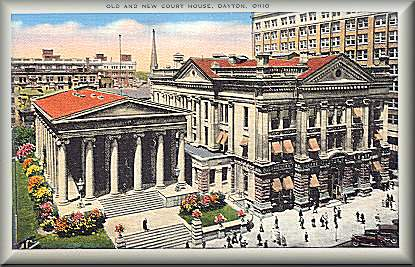
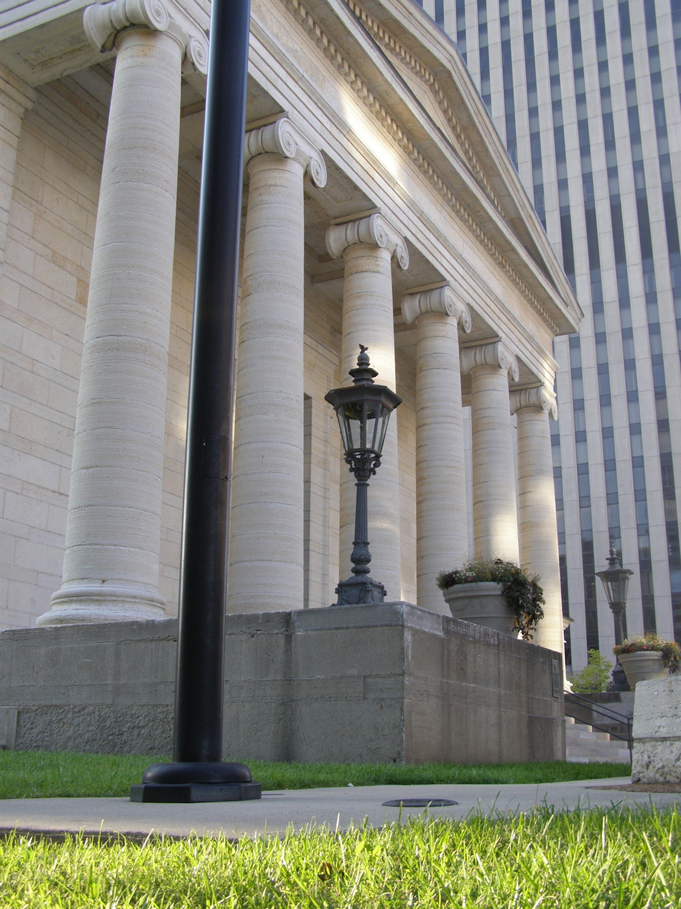
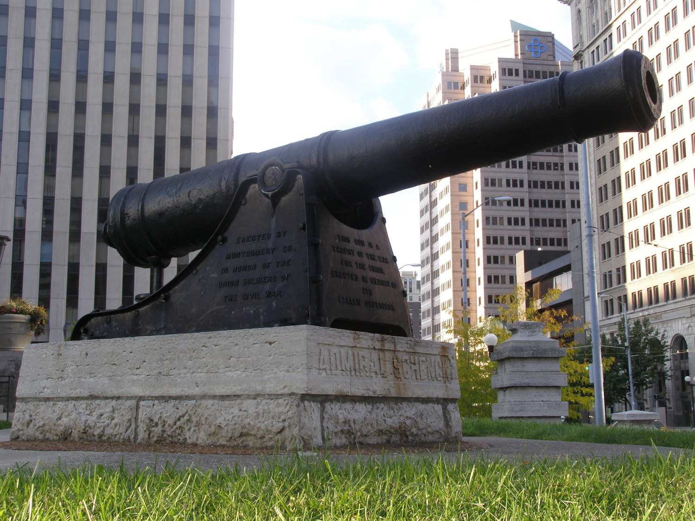
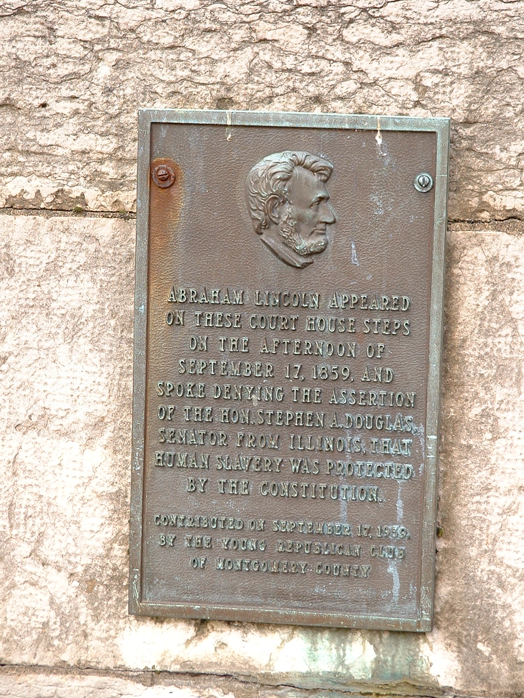
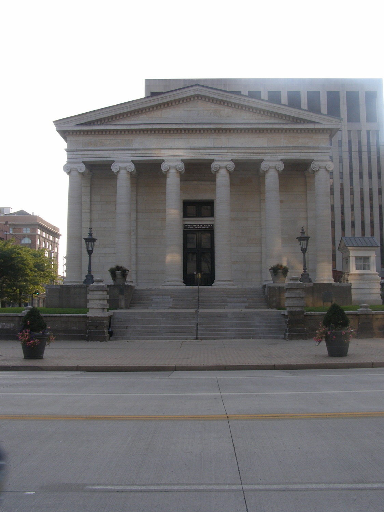
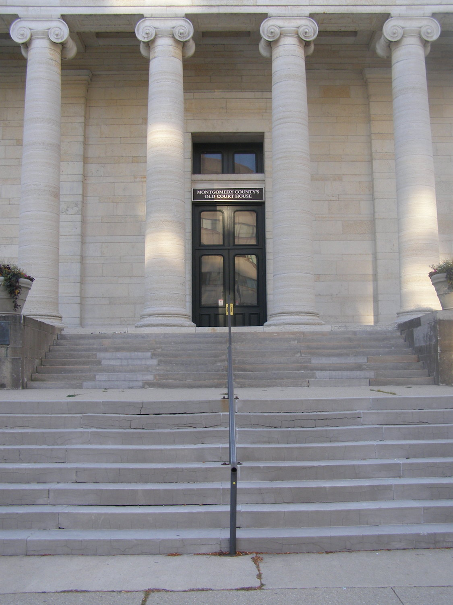

The Old Montgomery County Courthouse

Begun in 1847 and completed in 1850, Montgomery County's original courthouse stands at the corner of Third and Main in downtown Dayton. Today it houses the historical society Dayton History. When it was erected (at a cost of $100,000) close attention was paid to the aesthetics of the Greek Revival design--but it was far too small for a rapidly-growing city like Dayton.

The new courthouse went up after just thirty years, opening in 1881. The postcard above shows just how close they were to each other, the new building nearly touching the old. The 1881 structure lasted through most of the twentieth century (this card is dated 1954), but was demolished when Dayton got its modern high-rise Hall of Justice.

The old courthouse's design was suggested by Dayton citizen Horace Pease, inspired by illustrations of the Acropolis from one of his books. But New York architect Howard Daniels went even further; he modeled it directly on the Temple of Hephaestus, an Athens landmark from the 5th Century BCE. It is often called as the best surviving example of America's once-popular Greek Revival courthouses, and in 1970 it was added to the National Register of Historic Places.


The model cannon is dedicated to the Union soldiers killed in the Civil War. Another memorial is mounted on the right at the foot of the stairs--a bronze plaque, commemorating the September 17, 1859 speech Abraham Lincoln gave at the top of those steps. Just one year away from his election to the presidency, he stopped in Dayton on a speaking tour and delivered one of his legendary arguments against slavery--eloquent monologues made famous in the Lincoln-Douglas debates. It's not hard to picture him atop the broad limestone courthouse steps; it would be an ideal speaker's platform.

With all that history, you'd expect a ghost or two, and you wouldn't be disappointed. The old courthouse lawn supposedly hosted its share public hangings. Word is the original gallows--used for the last hanging in Montgomery County--remains in storage somewhere inside. Ethereal footsteps are sometimes heard ascending the stairs to the judge's chambers, and a soft moaning is heard.

Wikipedia: Montgomery County Courthouse
Rootsweb: Montgomery County Courthouse
Dayton History
Back